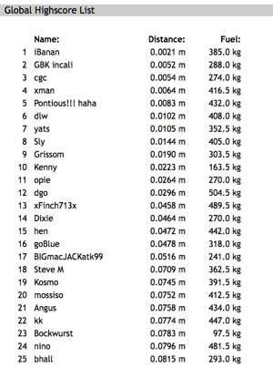

What space junky, almost historian, geek would I be without posting a little bit about some of the best type of history in existence. I refer, of course, to the history of man’s endeavors to explore space. On July 20, 1969, Neil Armstrong and Buzz Aldrin became the first humans to step on a celestial body other than Earth. Michael Collins waited in the Command capsule as the two American astronauts made human history.
So here are a number of resources and articles describing some cool things about space flight.
 Historic Spacecraft is an archive of space vehicles and other things space related. They have a lot of photos of vehicles, suits, and such. They also have posters and such for sell, if you’re inclined to have something on your wall. They also have stats and dates for all of the rockets and vehicles listed. A great source for photos for all your space history needs. Also really cool is a list of all completed Space Shuttle missions. Space Shuttle Discovery has flown the most missions, 36, so far (June 2009) with a total of 126 missions. The Space Shuttle Enterprise never made it to space, but you can see it at the Udvar-Hazy National Air and Space Museum in Dulles, VA. I’ve been there a couple of times, and it is extremely awesome.
Historic Spacecraft is an archive of space vehicles and other things space related. They have a lot of photos of vehicles, suits, and such. They also have posters and such for sell, if you’re inclined to have something on your wall. They also have stats and dates for all of the rockets and vehicles listed. A great source for photos for all your space history needs. Also really cool is a list of all completed Space Shuttle missions. Space Shuttle Discovery has flown the most missions, 36, so far (June 2009) with a total of 126 missions. The Space Shuttle Enterprise never made it to space, but you can see it at the Udvar-Hazy National Air and Space Museum in Dulles, VA. I’ve been there a couple of times, and it is extremely awesome.
 Next up from Flightglobal is an interactive timeline of sorts, with lots of information about the missions, flights, computers, physics and people who made it possible to put man on the moon. Most amazing about the whole flight, is that everything was based on theory. There was no way to test the actual theoretical physics without flying to the moon and back. “Although the theoretical physics of travelling to the Moon had been laid down before the advent of the Apollo missions, this was the first time a series of manned missions had put the theory into practice.”
Next up from Flightglobal is an interactive timeline of sorts, with lots of information about the missions, flights, computers, physics and people who made it possible to put man on the moon. Most amazing about the whole flight, is that everything was based on theory. There was no way to test the actual theoretical physics without flying to the moon and back. “Although the theoretical physics of travelling to the Moon had been laid down before the advent of the Apollo missions, this was the first time a series of manned missions had put the theory into practice.”
 Speaking of computers, Linux.com has a neat write up about the software used to guide the Apollo 11 spacecraft to the moon and back. It’s incredible to think that they were able to do such an amazing thing with technology comparable to today’s calculators. All of the code used punch cards and took hours to see if it was written properly. Jerry Bostick described the process in the Linux.com article:
Speaking of computers, Linux.com has a neat write up about the software used to guide the Apollo 11 spacecraft to the moon and back. It’s incredible to think that they were able to do such an amazing thing with technology comparable to today’s calculators. All of the code used punch cards and took hours to see if it was written properly. Jerry Bostick described the process in the Linux.com article:
“We would give instructions to the programs by punching cards,” Bostick said. “You had to wait at least 12 hours to see if it would work right.” The early programming was done in the real-time computing complex in Houston using IBM 7094 computers with 64K of memory. There were no hard disks. All the data was stored on magnetic tape, with each computer having about eight tape drives. Most programs used for the mission were written in Fortran, Bostick said. “After Apollo 1, we upgraded to the biggest and the best equipment that government money could buy, the IBM 360 with an unheard of 1MB of memory. We went all the way from 64K to 1MB.”
 Moving from space computers to space computer games, the Technologizer has a great piece about a well loved space game, Lunar Lander. This game started out as a text-based game written by a high school student. It became popular and was later turned into countless graphical spin offs. I’m playing one on the iPod Touch a bit too much at the moment. You can see I made the top 20 players for a while!
Moving from space computers to space computer games, the Technologizer has a great piece about a well loved space game, Lunar Lander. This game started out as a text-based game written by a high school student. It became popular and was later turned into countless graphical spin offs. I’m playing one on the iPod Touch a bit too much at the moment. You can see I made the top 20 players for a while!

 Finally, New Scientist has a number of interesting articles relating to the 40th anniversary of the moon landing. One article addresses with the ethics and issues with the moon being a historic spot. Wherever there is a piece of human debris or footstep, it’s historically valuable. Should all of these sites and artifacts and footprints be protected? What happens when/if tourists are able to visit the moon? Who’s going to be the museum curator and the tourist guides? I’ll take that job!
Finally, New Scientist has a number of interesting articles relating to the 40th anniversary of the moon landing. One article addresses with the ethics and issues with the moon being a historic spot. Wherever there is a piece of human debris or footstep, it’s historically valuable. Should all of these sites and artifacts and footprints be protected? What happens when/if tourists are able to visit the moon? Who’s going to be the museum curator and the tourist guides? I’ll take that job!
Another New Scientist article lists several reasons why the moon is still relevant to science, for government, commercial enterprise and the normal guy.
Lastly, New Scientist has a neat interactive map showing the many multi-national places on the moon where humans have left their mark and made exploration.


{kind=link}
{kind=link}